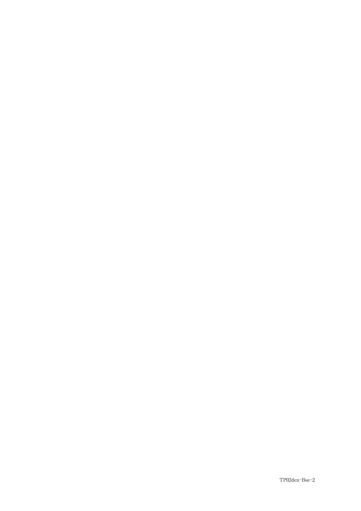

インプラント治療を行う際には、全身的・局所的な因子を総合的に評価し、適応を判断する。
インプラント治療を選択する際には、他の補綴装置との比較検討が重要である。
| 項目 | インプラント | 部分床義歯 |
|---|---|---|
| 咀嚼機能回復 | 高い | やや充足 |
| 装置の安定性 | 安定 | 不安定（動揺あり） |
| 外科的侵襲 | あり | なし |
| 治療期間 | 長い | 短い |
| 経済的負担 | 高い | 低い |
| 支台歯への負担 | なし | あり（鉤歯） |
インプラント治療には様々なリスク因子が存在し、治療の成功に影響を与える。
56歳の女性。下顎臼歯欠損による咀嚼困難を主訴として来院した。5か月前に下顎左側ブリッジの支台歯を抜去したがそのまま放置していたという。全身状態に問題はない。歯周組織検査、咬合接触検査、エックス線検査の結果、残存歯に問題はなく欠損部顎堤の骨量も十分であった。初診時の口腔内写真（別冊No.2）を別に示す。
欠損部への対応で適切なのはどれか。2つ選べ。

【解説】下顎左側臼歯部の遊離端欠損（456欠損）の症例。全身状態に問題なく、骨量も十分であることから固定性インプラント義歯が適応となる。また、遊離端欠損では片側性義歯は対合関係の問題から避け、両側性設計の部分床義歯が選択される。ブリッジは最後方が欠損しているため不可。
臼歯部において部分床義歯に比べてインプラント支持の補綴装置が優れているのはどれか。2つ選べ。
【解説】インプラントは骨に直接固定されるため、咀嚼能率が高く、動揺が少ない。一方、治療期間は長く、外科的侵襲があり、経済的負担も大きい。これらは部分床義歯の方が有利な点である。
口腔インプラント治療のリスク因子はどれか。すべて選べ。
【解説】喫煙は創傷治癒を遅延させ、オッセオインテグレーションの獲得を阻害する。ブラキシズム（パラファンクション）は過度な咬合力によりインプラントに負担過重を生じさせる。重度歯周疾患があると口腔内の細菌叢が悪化し、インプラント周囲炎のリスクが高まる。飲酒習慣と閉塞型睡眠時呼吸障害は、インプラント治療の直接のリスク因子とはされていない。